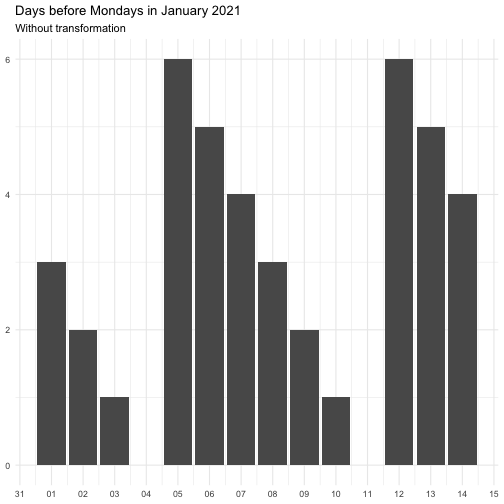

step_date_before creates a specification of a recipe
step that will create new columns indicating the time before an
recurrent event.
step_date_before( recipe, ..., role = "predictor", trained = FALSE, rules = list(), transform = "identity", columns = NULL, skip = FALSE, id = rand_id("date_before") )
Arguments
| recipe | A recipe object. The step will be added to the sequence of operations for this recipe. |
|---|---|
| ... | One or more selector functions to choose variables
for this step. See |
| role | Not used by this step since no new variables are created. |
| trained | A logical to indicate if the quantities for preprocessing have been estimated. |
| rules | Named list of |
| transform | A function or character indication a function used oon the resulting variables. See details for allowed names and their functions. |
| columns | A character string of variables that will be
used as inputs. This field is a placeholder and will be
populated once |
| skip | A logical. Should the step be skipped when the
recipe is baked by |
| id | A character string that is unique to this step to identify it. |
Value
An updated version of recipe with the new check added to the
sequence of any existing operations.
Details
The transform argument can be function that takes a numeric vector and
returns a numeric vector of the same length. It can also be a character
vector, below is the supported vector names. Some functions come with offset
to avoid Inf.
"identity" function(x) x "inverse" function(x) 1 / (x + 0.5) "exp" function(x) exp(x) "log" function(x) log(x + 0.5)
The effect of transform is illustrated below.



The naming of the resulting variables will be on the form
{variable name}_before_{name of rule}
Examples
#>#> #>#> #> #>#> #> #>#> #>#> #> #>library(extrasteps) library(almanac) library(modeldata) data(Chicago) on_easter <- yearly() %>% recur_on_easter() on_weekend <- weekly() %>% recur_on_weekends() rules <- list(easter = on_easter, weekend = on_weekend) rec_spec <- recipe(ridership ~ date, data = Chicago) %>% step_date_before(date, rules = rules) rec_spec_preped <- prep(rec_spec) bake(rec_spec_preped, new_data = NULL)#> # A tibble: 5,698 × 3 #> ridership date_before_easter date_before_weekend #> <dbl> <dbl> <dbl> #> 1 15.7 83 5 #> 2 15.8 82 4 #> 3 15.9 81 3 #> 4 15.9 80 2 #> 5 15.4 79 1 #> 6 2.42 78 0 #> 7 1.47 77 0 #> 8 15.5 76 5 #> 9 15.9 75 4 #> 10 15.9 74 3 #> # … with 5,688 more rows